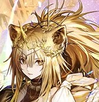
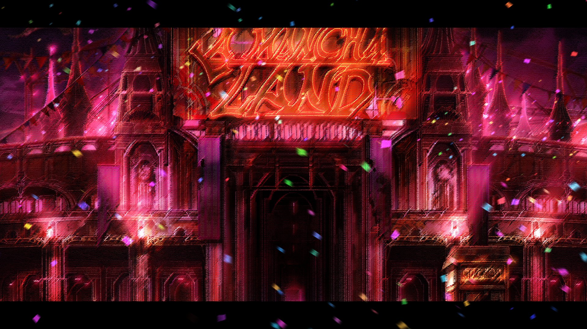

New 6* for Arknights announced!
October 5, 2024 by Jillian Budd

Arknights' 5.5 Anniversary Celebration is almost out on the CN server.
Coming with it are three new operators, several skins and lots of rewards.
The 6* is none other than the highly anticipated alter for Siege, an operator
that has been with us since the start of the game. Her new role is now an
Arts-guard, though with a heavy emphasis on True Damage. Many were expecting
here to stay true to her role as a physical damage dealer, perhaps in the
Earthshaker subclass. An operator, especially a guard, that specialises
in true damage is quite rare. Currently there are only 8 operators, of a roster of
300+, that can do meaningful true damage via their skills.
Siege has played an important role in the third arc of Arknight's storyline.
She's from the Aslan race, one that was hunted down to the point where the survivors
were forced into hiding. But now she's back in her home country Victoria, joining
the war for the throne. As a result, many players hope she will also serve an
important role in Arknights' meta. It is a cautious
Limbus Company's Canto 7 Trailer is here!
October 4, 2024 by Jillian Budd

Project Moon has just released the chapter 7 "Oblivion" trailer. Canto 7
will be centered around the populat character Don Quixote. Many players are
looking forward to it after Intervallo 6.5 revealed that Don Quixote is a Bloodfiend
(their version of vampires) and a second-generation one at that! As seen with previous chapters (excluding 1 and 2),
the main characters goes through significant development. Though their core traits
remain intact, they often mature and gain new outlooks on life, growing closer to
their companions also. Thus, as the game's resident silly character, players are
curious about how Don will develop and change by the end of the chapter.
After all, Project Moon's stories are the opposite of sunshine and rainbows.
The trailer showcased the first two Identities of the season: 000 Cinq Meursalt and,
after almost a year of wait, 00 North Zwei Sinclair. The trailer also showcased this
season's Battlepass EGO's: Hex Nails Rodion and Sinclair, Lasso Honglu and Faust, and
finally Mircalla Meursalt and Don Quixote. As each Battlepass carries a certain theme,
fans are already theorising what all these EGO have in common.